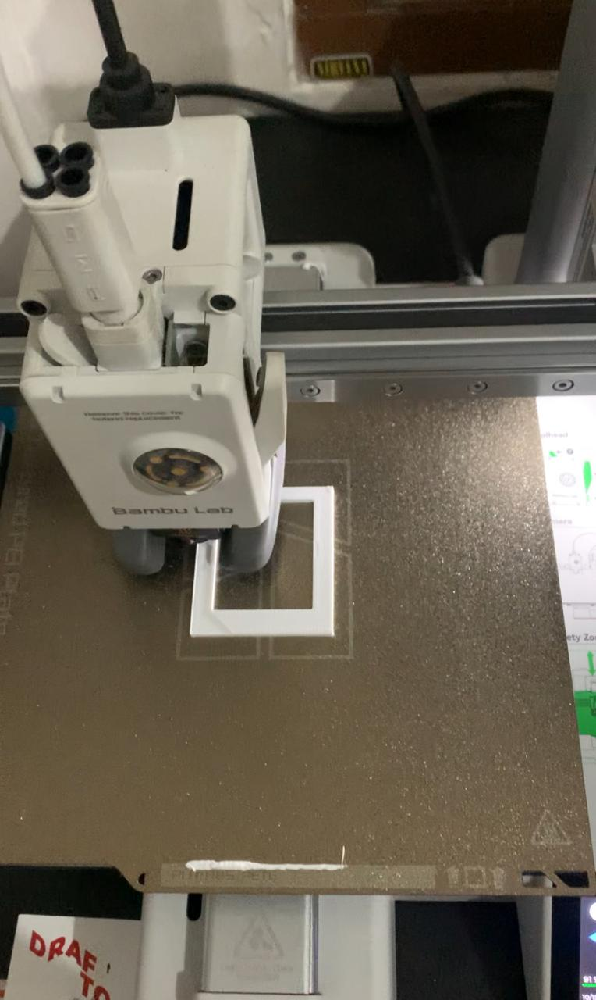
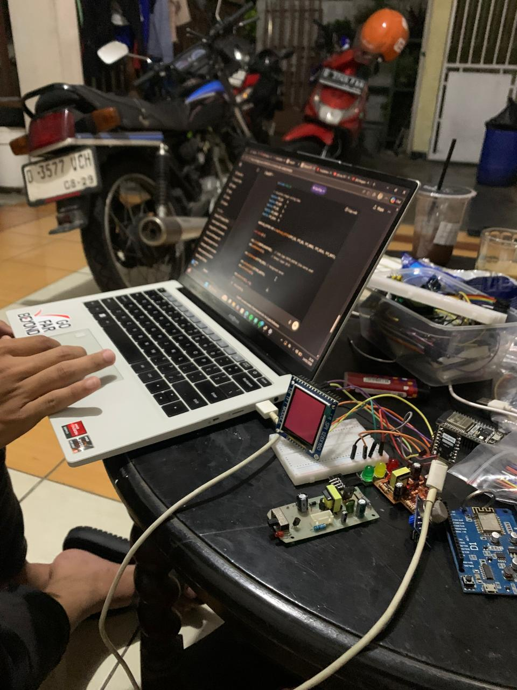
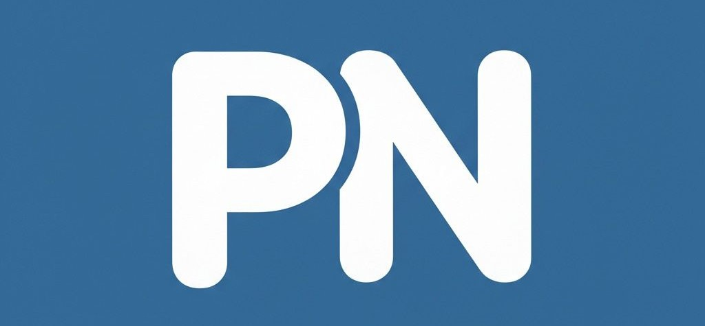
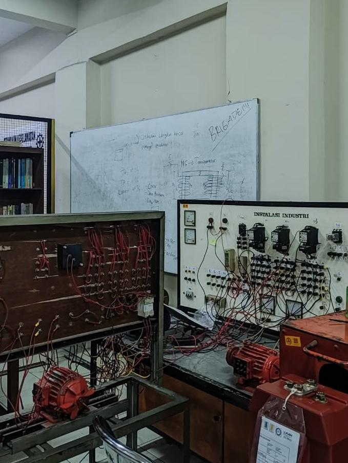
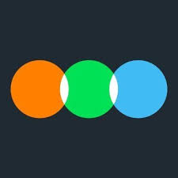

Selected Work
Pixel Studio
Hardware Innovator & Creator
“The Pocket Memory Archive,” an innovative portable moving photo display. I was fully responsible for the entire development process, from conceptualizing the idea and designing the electronic circuitry to integrating an Arduino microcontroller with an OLED display. I also designed and fabricated the casing using 3D printing technology to ensure a compact, functional, and aesthetically refined final product.


PastiNews.id
Digital Journalist & Strategist
As a digital journalist, I deliver accurate and timely information through compelling digital storytelling. I research both technical and social issues with rigor, transforming complex topics into clear, impactful narratives. By optimizing content strategically for digital platforms, I aim to broaden reach, foster public understanding, and contribute to an informed society in the era of digital disruption.




Institut Teknologi Nasional
Electrical Engineering Student
As an active Electrical Engineering student, I engage extensively in research, laboratory practicums, and embedded system prototype development. I integrate academic theory with real industrial practice—ranging from electrical circuit analysis and Proteus simulation to advanced microcontroller programming. Beyond academics, I am actively involved in the Electrical Engineering Student Association (HME), where I contribute to impactful community programs, including the development and installation of public street lighting (PJU) in underserved and 3T (frontier, outermost, and disadvantaged) areas.




Let's Connect

LetterBoxd